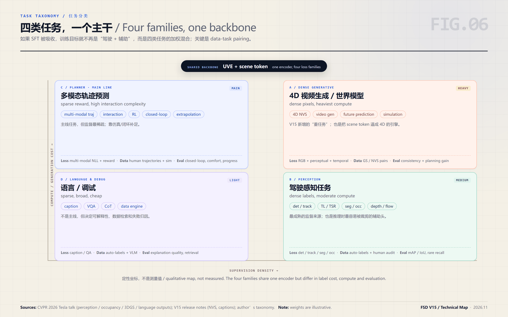
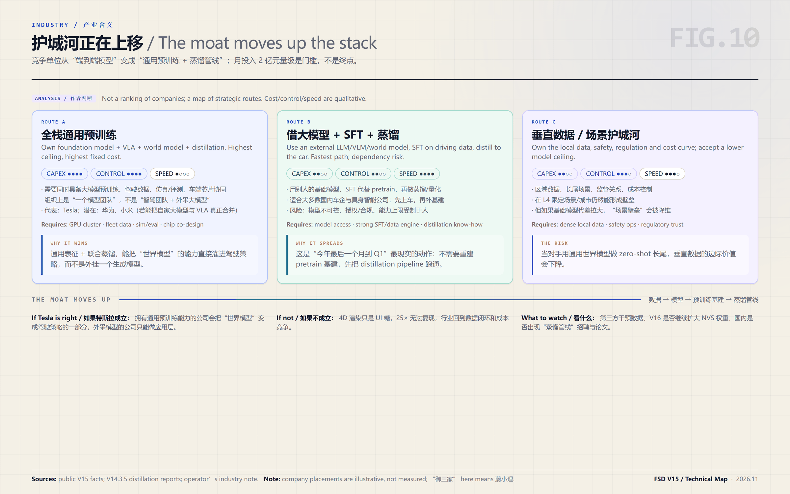

The change is not a feature. It is how the representation is used.
The most important thing about V15 is neither the “25×” nor the viral Reality View. It is that action and rendering fork from the same UVE features. The renderer is not a UI add-on bolted onto an old driving model; it is a constraint that forces the driving representation to be reconstructable, queryable, and 4D-consistent.
Shared representation is the spine
UVE emits features at 18 Hz, feeding a 3B action model and a 1B renderer. The two paths share one tensor, so rendering gradients can shape the encoder.
4B and 10B are different scopes
3B + 1B = 4B is the on-vehicle inference graph. The reported “10B” is more likely a training/cloud teacher. Tesla has not clarified; do not mix the two.
The stages are collapsing
V14's pretrain → SFT → post-train is becoming general pretrain → distill/compress → deploy. SFT data does not disappear; its status as a standalone stage does.
4D NVS is the new core task
Reconstruct with 3DGS along the trajectory, then render arbitrary novel views. Unlike next-frame prediction, NVS cannot be solved by a 2D shortcut: it demands depth, occlusion, and dynamics.
The moat moves up
The unit of competition shifts from “do you have end-to-end?” to “do you have a general-pretrain stack and a distillation pipeline?” The “RMB 200M/month” figure is an order-of-magnitude threshold, not an audited number; it buys compute, data, labeling, simulation, and talent together.
V15 turns the driving model into a general representation that can both drive and render the world, then distills it into a 4B on-vehicle graph. The genuinely new thing is the density and structure of supervision, not any single head.
How to read the labels: PUBLIC official release notes / public talks; REPORTED credible media, not independently verified; INFERRED derived from architecture, latency, or parameter counts; HYPOTHESIS operator notes or our speculation. We try to attach a falsifiable check to every inference.
First, align on facts: what V15 actually shipped
Strip away the marketing and only two changes are foundational: a new UVE vision encoder and Reality View. Most of the rest is driving-behavior cleanup.
What changed in the driving net
New vision encoder; better signs, small animals, road debris, chains, potholes, deep water; school-zone/weather speed control; slowdown before speed cameras; bike-rack mode; DMS with hats/sunglasses; navigation and parking-route learning. Tesla claims a 25× improvement in critical intervention rate.
Generative reality on the center screen
A virtual camera above the car renders the surrounding world in real time. It is not camera replay and not a game-engine asset library. Tesla calls it “novel view synthesis,” produced by the same end-to-end driving model while it drives. Tap a point to set a target; full-screen or split-screen.
25× critical intervention rate
Evidence: Official framing
What it actually means / common misread: It is the improvement in “critical intervention rate” versus V14, not “25× safer,” and not “25% better.” Tesla has not published the V14 baseline or a full definition; third-party fleet data is needed.
10B parameters
Evidence: Reported
What it actually means / common misread: Musk/Ashok previously said ~1B → ~10B. The number is not in the release notes, and the scope is undefined.
3B + 1B
Evidence: Musk post
What it actually means / common misread: 3B action model + 1B renderer = 4B. The screenshot has been widely cross-referenced, but an official document is still preferable.
UVE at 18 Hz
Evidence: Community teardown
What it actually means / common misread: The feature rate of the shared vision encoder. This is not the same as the 36 Hz camera input.
8 frames / 4 UVE cycles
Evidence: Community estimate
What it actually means / common misread: The renderer generates in chunks spread over four UVE cycles; the UI runs around 36 fps; minimum latency is ~222 ms, observed ~300 ms.
½ TRIP compute
Evidence: Official claim
What it actually means / common misread: Half of one TRIP accelerator, not half of an AI4 chip. If the third-party teardown of 3 TRIPs per chip still holds, that is roughly 1/6 of one chip's NPU compute.
HW4 only
Evidence: Official
What it actually means / common misread: V15 runs on AI4/HW4; HW3 stays on the v14 Lite branch.
4B ≠ 10B: 4B is the on-vehicle inference graph (3B action + 1B renderer); 10B is more likely the training/cloud teacher, or a larger ensemble including other heads. 25× ≠ 25%: the claim is a 25-fold improvement in critical intervention rate, not a 25% improvement and not a 25× reduction in crash rate. The denominators differ; do not multiply or swap them.
One easily missed detail: the release notes say the new vision encoder was trained on millions of internet videos and is shared across FSD, Robotaxi, and Optimus. That sentence matters more than “25×.” It means Tesla has plugged driving into a general visual pretraining stack, rather than continuing to train only on fleet data.
One more boundary: V15 is still a supervised release; the driver remains responsible. It shares a stack with Robotaxi, but it is not driverless. Do not read “shared software stack” as “already unmanned.”
The V14 baseline: what the three stages solved, and where they stalled
To understand V15, put V14's three stages on the table: pretrain → SFT → post-train. This is not three models; it is one model trained in three phases. Each phase solves a different problem and leaves a different debt.

The dimensionality problem V14 faced
By Tesla's public ICCV 2025 / CVPR 2026 framing: 7 cameras × 36 Hz × 5 MP × 30 s of history, patchified at 5×5 pixels, is roughly 2 billion input tokens; add navigation, 100 Hz kinematics, and 48 kHz audio. The output is just 2 tokens: steering and acceleration. End-to-end learning is the search for a causal map from 2B to 2.
That is why V14 had to inject a large set of interpretable intermediate signals: 3D occupancy and flow, vehicles/VRUs, traffic lights and signs, road boundaries and lanes, speed limits, interaction probabilities, and natural-language reasoning. They are both supervision and a handle for safety review.
V14's compact token
According to the operator's engineering notes, V14's compact token has two parts: an implicit scene token and some explicit instance tokens (cars, VRUs, traffic lights, lanes). The trajectory head cross-attends to these tokens and outputs a multi-modal trajectory.
Why it worked
Explicit instances are interpretable, easy to supervise, and easy to wrap in safety rules. SFT compresses human value judgments into the policy. Post-train fixes rewards with RL/closed-loop. Each stage had a job.
Where it stalled
The instance list is an information bottleneck (the “chicken vs goose” problem: semantics dropped by the list never come back). SFT narrows the distribution. Post-train is expensive and coupled to the simulator. Temporal view prediction admits 2D shortcuts and does not force 3D consistency.
V14's real legacy is intermediate supervision, not a particular head: make the black box emit inspectable things before it emits an action.V14's real legacy is intermediate supervision, not a particular head.
V15 does not abandon that road. It changes the interface: from an instance list to a 4D scene token, from next-frame prediction to novel-view rendering, from three stages to general pretrain + distillation. That is the structure the next section unpacks.
One encoder, two decoding paths
The hardest structural fact about V15 is that UVE forks into a 3B action model and a 1B renderer. This is not “a driving model plus a generative model.” It is one feature tensor serving both action and pixels.

Unfold that forward pass into a network, and you get the two towers below: a 3B action tower for planning and control, and a 1B render tower for novel views.

UVE: a general “visual clock”
UVE emits features at 18 Hz. FSD, Robotaxi, and Optimus share the encoder. It is pretrained on millions of internet videos for general vision, then aligned to driving on fleet data. The consequence: the encoder is no longer sensitive only to “driving-relevant objects,” but to the general world—materials, lighting, animals, debris, occlusion.
Why the fork matters
The 3B action model and the 1B renderer both fork from UVE features. The renderer is not an independent video pipeline pasted on top; it conditions on the same scene representation to generate a novel view. As a result, rendering loss flows back into UVE, forcing the features to satisfy two things at once:
- Action discriminability: details that should change braking cannot be thrown away;
- Rendering consistency: occlusion, depth, dynamics, and lighting must be coherent from a new viewpoint.
That is what “shared representation” buys over “add another generative model”: it does not just add an output; it adds a constraint.
The 1B renderer: what conditional mean-flow means
Per community teardown, the renderer is a 1B conditional mean-flow model (a flow-matching variant that learns the average velocity field over an interval). It is conditioned on UVE features, takes the previous frame plus noise, and outputs the current view. It does not rebuild a full frame from scratch; it predicts the change, which cuts tokens, NFEs, and compute.
It generates an 8-frame chunk spread over 4 UVE cycles; the UI runs around 36 fps; glass-to-glass latency is at least 222 ms and observed around 300 ms. These numbers are community arithmetic from “1/2 TRIP per UVE frame at 18 Hz,” not a Tesla disclosure.
“½ TRIP” means half of one TRIP accelerator, not half of an AI4 chip. Third-party teardowns count 3 TRIPs per AI4 die; if that still holds, the renderer uses roughly 1/6 of one die's NPU compute. This is why Tesla can run a generative view on the car: it spends spare compute, not the control loop's budget.
4B vs 10B: make the scope explicit
On-vehicle action model
Size: 3B
Evidence: Musk post
Note: Outputs trajectory/control with auxiliary heads.
On-vehicle renderer
Size: 1B
Evidence: Musk post
Note: NVS decoder, conditional mean-flow.
On-vehicle graph
Size: 4B
Evidence: Sum
Note: 3B + 1B; whether other heads/models exist is unspecified.
Training/cloud teacher
Size: ~10B
Evidence: Reported
Note: May include full-task, full-resolution, long-horizon models; scope undefined.
Full system
Size: Unknown
Evidence: Open
Note: With a data engine, simulator, or other experts, “total parameters” is not meaningful.
The cleanest reading: 4B is the deployment graph, 10B is the training graph. They are not contradictory; they are different scopes. Until Tesla clarifies, any absolute claim that “V15 is only 4B” or “V15 is 10B” is overconfident.
From three stages to two: where exactly does Grok sit?
If V15 really absorbs SFT into pretraining, it has to answer one question: where does “general” come from? The operator's claim is “Grok trains together with FSD.” That sentence can mean three very different things, with very different evidence.
The stages collapse; the tasks do not disappear
V14 was “data → pretrain → SFT → post-train → deploy.” V15 looks more like “general pretrain (including planning) → distill/compress → deploy.” The change is not the task list; it is how tasks are organized:
- SFT data remains: human trajectories, high-quality scenes, interventions/corrections are still supervision. They no longer form a separate stage; they become a high-weight, low-noise annealing interval inside pretraining.
- Post-train becomes a curriculum: RL, interaction, closed-loop, and extrapolation start before pretraining ends. They are curriculum/auxiliary tasks around the main multi-modal trajectory objective.
- Data-task pairing changes: one driving clip can yield NVS pairs (pose), perception labels, planner trajectories, and captions. There is no need for separate “pretrain corpus” and “SFT corpus” samplers.
Three stages, three data distributions
Pretrain on large unlabeled/weakly labeled video; SFT on high-quality driving trajectories; post-train on simulation and reward. Different distributions, different objectives.
One stage, four supervisions
General pretrain eats NVS, perception, planning, and language together. SFT becomes a high-quality anneal; post-train becomes a curriculum.
The second stage is compression
Cloud teacher → 4B student; reuse the task/data mix; quantize for deployment. It is not “train again”; it is “move the capability over.”
Three readings of “Grok + FSD”
A. Shared general-pretrain stack
What it means: Grok/xAI's general vision/language/video data, objectives, and architecture experience feed FSD's UVE and general pretrain.
Evidence: Indirect UVE is trained on internet video; the encoder is shared across FSD/Robotaxi/Optimus.
Our verdict: Most likely. Fully consistent with the “general pretrain” narrative.
B. Grok weights co-train directly
What it means: Grok weights and the FSD network are jointly trained with gradients flowing both ways.
Evidence: No public evidence Grok's publicly visible role has been in-cabin voice/assistant, not FSD training.
Our verdict: Unverified. Even if true, it is more likely a shared recipe than Grok weights inside the car.
C. Grok as a data engine
What it means: Grok/VLM generates captions, retrieves scenes, attributes failures, and cleans data.
Evidence: Plausible Large-scale auto-labeling is standard practice.
Our verdict: Likely. It changes data efficiency, not model structure.
If “Grok trains with FSD” means A + C (shared general-pretrain stack + Grok as a data engine), it is highly consistent with public information. If it means B (Grok weights directly in the FSD training graph), there is no public evidence. The two claims are easy to conflate, but their engineering implications are far apart.
Counterpoint: SFT will not truly disappear
From an optimization standpoint, any final supervised training on high-quality driving data is SFT. Calling it “annealing,” “alignment,” or “decay” is naming. The real change is that SFT is no longer a separate engineering stage—no separate dataloader, checkpoint, or acceptance gate. It becomes a schedule interval inside general pretrain.
So the rigorous version of “V15 removed SFT” is: V15 removed the standalone SFT stage, not the SFT data or objective.
4D NVS: turning miles into infinite views
If you had to pick one technical reason why V15's “basic capability” is stronger, pick 4D novel view synthesis. It is not a UI feature. It is a harder, more 3D, more world-aware self-supervised task than next-frame prediction.

Why NVS is harder than temporal view prediction
Temporal view prediction (predict the next frame from past frames) admits a 2D shortcut: learn “copy + local warp” and the loss drops on most frames without real 3D understanding. NVS is different: given a camera pose the model has never seen, render that view. To do it well, the model must implicitly learn depth, occlusion, object backsides, and dynamic consistency.
Predict the next frame
2D shortcut: copy the previous frame and learn local motion. Geometry useful for planning is not necessarily forced out.
Render a novel view
Must encode depth, occlusion, and dynamics. Rendering error directly punishes representations that “look right but are geometrically wrong.”
The data loop: from fleet logs to NVS pairs
- Fleet logs: 7 cameras, 36 Hz, 30 s clips; every frame has ego pose and camera extrinsics.
- Trajectory / pose: ego trajectory and camera pose condition the NVS; they can be discretized into tokens or verbalized as text.
- 3DGS reconstruction: dynamic-aware Gaussian reconstruction along the trajectory; Tesla has publicly discussed generative 3D Gaussian at ~220 ms.
- Novel-view rendering: sample virtual cameras in space (left/right/up/down) and time (past/future frames); render RGB, depth, segmentation, flow.
- Training pairs: feed condition (pose/language) + target (new view) into UVE/scene token as a heavy general-pretrain task.
The economics are strong: one capture, many supervisions. A 30-second log no longer yields only one human trajectory; it can yield hundreds of NVS pairs. That is what “turning miles into infinite views” means.
Pose as language
The operator's point that “pose itself is a language input” is important. Camera pose can be encoded as text or discrete tokens, e.g., “move the camera 3 m forward, 1.5 m up, look 20° left.” Then the same scene token is queried by two conditions:
- Action condition: where the ego vehicle will go;
- Camera condition: from which virtual viewpoint to look at the world.
Language here is not “explanation”; it is a general condition interface. It lets NVS, video generation, scene editing, and even counterfactual rollout share one syntax.
A “local world model” is not a cloud simulator
The 1B renderer is a local world model: short horizon, conditional, view-consistent. It runs in real time on the car, but it is not the cloud neural simulator that can roll out indefinitely, inject adversarial scenes, and evaluate closed-loop policies. They are different scales of the same family:
Horizon
On-car 1B renderer: 8-frame chunks / short
Cloud world simulator: Long-horizon rollout
Conditioning
On-car 1B renderer: UVE features + previous frame + pose
Cloud world simulator: State + action + scene edits
Use
On-car 1B renderer: Reality View, NVS supervision
Cloud world simulator: Closed-loop eval, RL, adversarial data
Compute
On-car 1B renderer: ½ TRIP per UVE frame
Cloud world simulator: Data-center scale
GS quality, dynamic objects, occlusions, and lighting all affect NVS. The model may hallucinate details in occluded regions. Good NVS metrics do not prove better planning metrics—this is exactly what V15 still has to demonstrate publicly.
Compact token: from an instance list to a 4D scene
V14's compact token was “implicit scene + explicit instances.” V15 likely shifts the center of gravity to the implicit scene and demotes instances from “interface” to “optional query.” This is not an aesthetic choice; NVS forces it.

V14: instances were both the interface and the bottleneck
Explicit instances are obviously useful: interpretable, easy to supervise, easy to wrap in safety rules, easy to visualize. They are also an information bottleneck. Perception emits boxes for “chicken” and “goose”; planning needs to know “the chicken is crossing (wait)” versus “the goose is idle by the road (go around).” Once that semantics is lost in the instance list, no downstream network can recover it.
The list is also variable-length: different scenes have different numbers of cars, people, and lights. Cross-attending over it makes the compute graph scene-dependent, which is bad for deterministic latency.
V15: the scene is the interface, instances are queries
The more likely V15 direction: a fixed-size 4D scene token as the primary interface, with instances becoming optional heads queried from that token. Three direct benefits:
- Denser representation: 4D NVS forces the scene token to encode geometry, appearance, and dynamics. Planning gets a queryable world, not an object list.
- More stable compute: fixed-size tensors make attention cheaper and latency more predictable; no variable-length list.
- Prunable inference: auxiliary heads (perception, language, visualization) can be turned off or run at a lower rate on the car, leaving the main line and renderer.
“Weaken instances” is not “delete instances”
The rigorous phrasing is: instances move from “interface” to “query.” Training still needs instance supervision (detection, tracking, segmentation, occupancy), or safety validation fails. But those heads can decode from the scene token rather than acting as a separate token set for planning. At inference, they can be pruned or run asynchronously.
This yields an observable prediction: V15's visualization should show fewer traditional boxes/icons and more dense, generative scenes. That does not mean perception heads vanished; it means they no longer sit at the center of the planning interface.
A fixed-size scene token plus direct cross-attention is easier to kernel-fuse, cache, and make deterministic than a variable-length instance list with multi-stage fusion. The renderer can also be scheduled on spare compute—precisely the premise behind “½ TRIP.”
Four task families: what the objective looks like if SFT disappears
Absorbing SFT into pretraining means the objective is no longer “driving + a few auxiliary heads.” It is a weighted mixture of four task families. The hard part is not the number of tasks; it is whether each family can be paired efficiently from the same data.

The division of labor
4D video generation / world model
4D NVS, video generation, future-frame prediction, simulation. Highest density and heaviest compute; V15 promotes it to a main-task-level supervision.
Driving perception
Detection/tracking, traffic lights/signs, instance/semantic/occupancy segmentation, depth/flow. The most mature labels; also the easiest head to prune at inference.
Multi-modal trajectory prediction
The main line: multi-modal trajectories, interaction, RL, closed-loop, extrapolation. The sparsest supervision; needs simulation and closed-loop data.
Language / debug
Captions, VQA, CoT, data engine, failure attribution. Not the main line, but drives interpretability, retrieval, and auto-labeling.
Put the four families back into the training system and you get the framework below: the data engine pairs tasks, general pretraining turns SFT into a high-quality anneal, and distillation lands the 4B student on the car.

One clip, four supervision families
Putting four families in one training run only works if data-task pairing is fine-grained. One 30-second clip can yield:
4D NVS
Source: Fleet clip + 3DGS
Label / condition: Novel camera pose, time offset
Purpose: Force 4D consistency of the scene token
Perception
Source: Fleet clip + auto/human labels
Label / condition: Boxes, tracks, masks, occupancy, depth
Purpose: Interpretability, safety, distillation supervision
Planning
Source: Human trajectories + simulation
Label / condition: Multi-modal futures, reward, interventions
Purpose: The main policy
Language
Source: VLM captions + human review
Label / condition: Scene descriptions, decision reasons, QA
Purpose: Retrieval, debugging, CoT
General vision
Source: Internet video
Label / condition: Self-supervised / video generation
Purpose: World priors, long-tail generalization
This table explains why removing SFT is feasible: planning is still learned; its supervision is simply placed in the same pairing table as NVS, perception, and language. SFT becomes the row with the highest weight and lowest noise.
Weights and schedule
A plausible schedule:
- General vision warm-up: internet video + general NVS, building world priors;
- Fleet NVS + perception: add 3DGS reconstruction, novel views, detection/segmentation/occupancy;
- Planner mixture: add multi-modal trajectories, interaction, closed-loop/RL curriculum;
- High-quality anneal: upweight human driving, interventions/corrections, hard scenes;
- Distill: move the teacher's task structure and representation into the 4B student.
This is not the only schedule; one can also mix throughout and only change weights. The point is: there is no standalone stage that trains only on driving data.
Counterpoint: four families compete for capacity
Multi-task learning is not free. 4D NVS consumes decoder capacity and compute; perception pulls resolution up; language increases token length; planning demands low latency. The real difficulty is task balance and evaluation: if NVS metrics rise but planning metrics do not, it is just a beautiful auxiliary task.
However tasks are merged, the main line remains multi-modal trajectory prediction. 4D NVS is a heavy auxiliary that strengthens the representation, not a replacement for planning. The final scorecard is still intervention rate, comfort, progress, and closed-loop safety—not rendering quality.
Will post-training be swallowed?
The operator's claim: if the 4D video generator is already a usable pretrain simulator, post-train can be absorbed too—RL, interaction, closed-loop, and extrapolation become auxiliary to multi-modal trajectory prediction. The direction is sound; the boundary is blurrier than “absorption.”

Why V14's post-train was separate
Because the simulator and the policy were two different things: the policy learned from real data, then RL/closed-loop evaluation ran in a simulator; the simulator generated states, the policy generated actions, and they exchanged data through an interface. That interface was both an engineering boundary and an organizational one.
V15 changes the premise: if the 4D renderer can generate counterfactual futures conditioned on actions, it is no longer replay—it is an interactive local simulator. The policy can then roll out inside the same model family, and RL/interaction/closed-loop/extrapolation can become auxiliary tasks trained alongside trajectory prediction.
A more precise word: curriculum
This is not “post-train disappears”; it is “post-train becomes a late curriculum inside pretrain.” The differences:
- Data: from offline state-action pairs to online/semi-online rollouts plus a real-fleet anchor;
- Objective: from imitation to imitation + reward + safety constraints + interaction consistency;
- Schedule: not “pretrain, then post-train,” but “increase RL/closed-loop weight in a certain interval of pretrain.”
If this holds, V15's paradigm is indeed two-stage. But “post-train” as a function still exists; it is reallocated into the pretrain curriculum and the distillation fine-tune.
Four hard constraints
Simulator fidelity
Looking real is not the same as being physically correct. Collisions, occlusion, lighting, and other agents' reactions can all fool the policy.
Reward hacking
The policy will find reward loopholes. Real interventions, collisions, comfort, and rule constraints must anchor the reward.
Distribution shift
In a closed loop, the policy drifts into states it generated itself. Real fleet data must recalibrate continuously.
Compute cost
Closed-loop rollout is an order of magnitude more expensive than supervised learning. “Absorbed” is not free; it may just move the bill from post-train to pretrain.
If the 4D generator can only replay trajectories seen in training, it is a renderer, not a simulator. If it accepts counterfactual actions (“what if we turn left here?”) and produces physically plausible, temporally coherent futures, it can carry post-train. That is the technical watershed to watch.
3B + 1B: the arithmetic of productization
V15's model size is not “bigger is better.” It is a product calculation: a 3B action backbone + a 1B rendering decoder, running inside AI4's spare compute with acceptable image quality and latency.
Why a deep DiT at low resolution
The operator notes that the DiT stack is deep but the resolution is modest, and that spatial/temporal super-resolution are “easy external tricks.” This matches the logic of spending capacity on semantics and temporal consistency, then letting the product layer handle pixels:
- Semantics first: scene understanding, occlusion, dynamics need depth;
- Pixels later: UI resolution can be upscaled spatially; frame rate can be filled temporally;
- Compute under control: generate low-res + external SR is much cheaper than end-to-end high-res, and easier to make deterministic.
These are “pure engineering tricks,” but they decide whether users see “a blurry 4B” or “a GTA-like 4B.” Product wins often live in these add-ons that do not change model training.
The latency budget, laid out
UVE features
Number: 18 Hz
Meaning: One feature frame every 55.6 ms; the master clock.
Render chunk
Number: 8 frames / 4 cycles
Meaning: Generate 8 frames at once, spread over four UVE cycles; minimum ~222 ms.
UI refresh
Number: ~36 fps
Meaning: 27.8 ms/frame; maintained by reusing/interpolating within a chunk.
Glass-to-glass
Number: ~300 ms
Meaning: Community measurement/estimate; not an official metric.
Compute
Number: ½ TRIP / UVE frame
Meaning: Half of one TRIP engine, not half of an AI4 chip.
Distillation is not “just compression”
If V15's paradigm really is “pretrain → distillation,” at least four layers are being distilled:
- Features/representation: UVE and scene-token intermediates, so the student learns how the teacher sees the world;
- Task structure: weights over the four families, data-task pairing, curriculum order;
- Outputs: trajectory, rendering, perception, language, uncertainty;
- Deployment constraints: quantization, pruning, operator fusion, deterministic latency.
This is why “reuse the pretrain task mix and data mix” matters: distillation does not teach a 4B student from scratch; it makes the student imitate the teacher inside an already-validated task distribution.
Capability transfer
Teacher → student: features, logits, rendering, trajectory, language, uncertainty. Goal: the same tasks, not fewer parameters.
Representation compression
FP32 → FP16/INT8/FP8, QAT, pruning, operator fusion. Goal: the same capability at lower bandwidth/power.
Four product-layer add-ons
- Spatial SR: upscale low-res rendering to UI resolution;
- Temporal SR / frame interpolation: smooth chunk boundaries and preserve a 36 fps feel;
- Occlusion fill: plausible inference in camera blind spots, not replay;
- UI compositing and fallback: trajectory arrows, clickable targets, map overlay; safe fallback if rendering fails.
These do not change training, but they change the product. They are also part of why Tesla got there first: not algorithm alone, but algorithm + chip + cockpit + product team tuning together.
4B is not a “small model”; it is a model shaped by the task structure. Its ceiling is set by the teacher and the task mix; its floor is set by distillation, quantization, and latency engineering. Treating 4B as a “shrunk 10B” underrates distillation; treating it as “another 10B” underrates deployment constraints.
Industry implications: the moat moves up the stack
What should worry Chinese companies about V15 is not the 25×; it is the demonstration of a full “general pretrain + distillation” path. The unit of competition changes from “an end-to-end model” to “a pretrain stack plus a distillation pipeline.”

What RMB 200M/month buys
The operator's “RMB 200M/month” is an order-of-magnitude threshold, not an accounting line. It roughly buys four things:
Compute
Depreciation/rental of a thousand-to-ten-thousand-GPU cluster, networking, storage, training frameworks, fault tolerance. Pretrain bills live here.
Data and labeling
Fleet upload, cleaning, auto-labeling, human audit, 3DGS reconstruction, synthetic scenes. The data engine is the hidden cost center.
Talent
Foundation-model pretraining, world models, driving planning, chip co-design, evaluation—a cross-disciplinary team that can actually work together.
Evaluation and closed loop
Neural simulators, closed-loop RL, safety validation, regulatory dialogue. Without evaluation, pretrain is only “bigger,” not “better.”
Three routes
Route A: full-stack general pretraining. Own the foundation model, VLA, world model, and distillation pipeline. Highest ceiling, highest fixed cost. Tesla is the reference; Huawei/Xiaomi could qualify if they truly merge their foundation models with VLA. But “having a model” is not the same as “having driving data, safety validation, and organizational coordination.”
Route B: borrow a model + SFT + distill. Use an external LLM/VLM/world model, replace pretrain with SFT, then distill/quantize. This is the most realistic move for most Chinese automakers and embodied-AI companies: no need to rebuild pretrain infrastructure; get the distillation pipeline working first. The price is model dependence, licensing/compliance risk, and a capability ceiling set by someone else.
Route C: vertical data/scene moat. Regional data, long-tail scenes, regulatory relationships, cost control. This still creates a moat in limited L4 scenarios/cities; but if the foundation-model gap widens, the scene moat gets flattened.
蔚小理, Huawei, Xiaomi: separate narrative from fact
“御三家” here means NIO, XPeng, Li Auto. All three invest heavily, but their paths differ: XPeng has released positive signals around end-to-end/VLA; NIO has just released a new generation; Li Auto's pretrain is not identical to the “general pretrain” defined here, with more emphasis on a production closed loop/world model. These are market narratives, not audited data; this note does not treat specific amounts or rankings as fact.
The threat from Huawei and Xiaomi is the combination of their own foundation model + their own cars/chips/channels. If they can merge a general model with VLA and reuse a cloud training/distillation pipeline, it is a dimensional strike against everyone else. But the hard part is not the model; it is the driving data loop, functional safety, organizational coordination, and regulation. If any link fails, it can look formidable and still land slowly.
VLA and WAM are merging into one route
VLA (Vision-Language-Action) emphasizes language as input/output; WAM (World-Action Model) emphasizes a world model plus action. They used to look like two routes, but in a structure like V15 they converge:
- Language remains an interface (pose as language, CoT, captions);
- The world model is no longer an add-on; it is part of the shared representation (the NVS renderer);
- Action is no longer only imitation; it is optimized by rollout/reward inside the world model.
So “VLA and WAM merge” is more precisely: they become different losses/interfaces of the same model. That is also why “borrow a big model + SFT instead of pretrain + distill” becomes the realistic next-quarter strategy—not because it is optimal, but because it is fastest.
“Tesla has already validated this” is a strong claim. Public evidence supports a distillation pipeline, a 4B on-car graph, and a reported Robotaxi→HW4 distillation; it does not prove that “general pretrain → distillation” is fully closed, nor that it beats every other route in every scenario. Calling a visible trend an endpoint is exactly what this note tries to avoid.
For most companies, the realistic strategy is not “chase a RMB 200M/month pretrain,” but “pick a strong enough foundation model, push SFT and distillation to the limit, and defend the scene with vertical data.” This widens the ceiling gap with Tesla, but gets a product out by Q1. The real risk: when competitors use general world models for zero-shot long-tail, the marginal value of vertical data falls.
Falsifiable checks
A technical judgment is only useful if it can be proven wrong. These are the checks worth watching over the next one to two quarters.

01
Check: 4B vs 10B scope: does Tesla clarify the on-car graph vs the training graph?
If true: The “4B deployed + 10B teacher” distillation story holds.
If false: The numbers are marketing; model-size assumptions need rework.
02
Check: 25× baseline and third-party data: is the critical-intervention improvement reproducible?
If true: V15 is a real capability jump, not just a visual upgrade.
If false: It falls back to a “25%-class” improvement; V15 was overhyped.
03
Check: Does V16 still have a standalone SFT? Will the pipeline be only pretrain + distill?
If true: The “stage collapse” is confirmed by the official roadmap.
If false: SFT remains; our paradigm claim was too aggressive.
04
Check: Is rendering counterfactual? Can it change actions/views for closed-loop rollout?
If true: The 4D generator can serve as a post-train simulator.
If false: It is only a renderer; post-train still needs external simulation.
05
Check: Are auxiliary heads pruned at inference? Does the car disable perception/language heads by scene?
If true: The scene-token + prunable architecture holds.
If false: Aux heads remain in the main loop; the engineering speedup is overstated.
06
Check: Does NVS improve planning? Not PSNR, but intervention rate, comfort, closed-loop score.
If true: 4D NVS is effective supervision, not a pretty auxiliary.
If false: NVS is UI/pretrain theater with no real driving contribution.
07
Check: Do Chinese players post distillation-pipeline jobs/papers/releases? Is “borrow + SFT + distill” a wave?
If true: The industry thesis holds.
If false: Companies keep building pretrain, or routes fragment further.
08
Check: Do Huawei/Xiaomi merge foundation models with VLA? Is there a unified on-car model?
If true: The “dimensional strike” becomes real.
If false: Organization/data/safety barriers are harder than the model; the merge slips.
V15 is a watershed
Critical interventions reach a “tens of thousands of miles” scale; Robotaxi economics are recalculated; general pretrain + distillation becomes the standard, and Chinese players are forced to accelerate.
V15 is an experience upgrade
Reality View is cool, but driving gains are limited; the industry returns to data loops, cost, and safety validation; the pretrain narrative cools.
Glossary
UVE
Unified Vision Encoder. Shared by FSD, Robotaxi, and Optimus in V15; emits features at 18 Hz.
VLA
Vision-Language-Action. A paradigm with vision as input, language as intermediate/output, and action as the target.
WAM
World-Action Model. A world-model-centric paradigm with action as output; converging with VLA.
NVS
Novel View Synthesis. Render a scene from a new camera pose; 4D NVS also requires temporal consistency.
3DGS
3D Gaussian Splatting. Represent a scene with many Gaussian ellipsoids; differentiable, fast, supports dynamic objects.
DiT
Diffusion Transformer. A Transformer backbone for diffusion/flow-matching denoising.
Mean-flow
A flow-matching variant that learns an average velocity field over an interval; fewer NFEs, better for low-latency car deployment.
Compact token
The intermediate interface in V14/V15. V14: implicit scene + explicit instances; V15: more 4D-scene-centric.
SFT
Supervised Fine-Tuning on high-quality driving data; V15 may absorb it as a pretrain annealing interval.
RL / closed loop
Reinforcement learning and closed-loop evaluation. Roll out in simulation/world model, optimize with reward and safety constraints.
Distillation
Transferring a large teacher's capability (features, outputs, task structure) into a smaller student.
QAT / quantization
Quantization-Aware Training. Simulate low precision during training, deploy as INT8/FP8 to cut bandwidth/power.
TRIP
A neural-network accelerator block in Tesla's AI4 chip. Reality View uses “half a TRIP,” not half an AI4.
MPCI
Miles Per Critical Intervention. V15's 25× refers to this metric relative to V14.
Sources, evidence policy, and notes
This is not an official Tesla document. It combines public information, the operator's engineering notes, and the author's inference, and tries to label each layer.
Evidence policy
- PUBLIC: Tesla release notes, public Musk/Ashok statements, CVPR/ICCV talks, official safety data.
- REPORTED: credible media/technical posts, not independently verified; labeled “reported,” not “official.”
- INFERRED: derived from parameters, latency, compute, or architecture; may be overturned by new information.
- HYPOTHESIS: operator's claims or our speculation; not to be cited as fact.
Main sources
- Tesla FSD V15 rollout and release notes, Sohu/Global Times, 2026-11-22: link
- Reality View, generative rendering, and compute, ZOL, 2026-11-23: link
- FSD V15 vision encoder / Reality View teardown, OFweek, 2026-11-23: link
- Tesla CVPR 2026 talk (general robotics foundation model, intermediate outputs, World Sim NN), OFweek, 2026-06-05: link
- Tesla ICCV 2025 talk analysis (2B tokens, 3DGS, language reasoning), Woshipm, 2025-12-22: link
- Community teardown of UVE / 3B / 1B fork, 18 Hz, 8-frame chunks, Weibo, 2026-11-22: link
- Musk reply on “3B + 1B” (screenshot) and discussion, Weibo, 2026-11-22: link
- V15 “10B / 25× / architecture rebuild” report, TechWeb, 2026-11-23: link
- V14.3.5 unified model and Robotaxi→HW4 distillation report, News18a, 2026-07-21: link
- FSD V15 reaction and 25× / industry analysis, Sohu Auto, 2026-11-23: link
How the 11 theses were handled
These 11 claims no longer have a standalone section. They sit in Appendix A at the end, each with an evidence level. Conflicts with public information (e.g., “Grok directly co-trains,” “10B vs 4B”) are separated by scope; claims without public evidence (e.g., “remove SFT,” “weaken instance tokens,” “external SR”) are marked as inference with falsifiable checks.
Citation and updates
Cite as: FSD V15 Technical Map, 2026-11-23, v1.0. This note will be updated as public information arrives. If you have first-hand V15 training details, the most valuable additions are: UVE pretraining data mix, 4D NVS conditioning, compact-token structure, and teacher/student distillation configuration.
Version: v1.0 · 2026-11-23 · Chinese/English · 11 figures · single-file HTML.
Disclaimer: Not investment advice. Company/route judgments are the author's analysis, not any company's official position.
Appendix: the 11 theses, audited
The 11 claims are kept here as the audit table for the whole note: evidence level, verdict, and the relevant section. Nothing is deleted; public facts and open hypotheses remain separated.
01
Claim (compressed): Grok trains together with FSD; V14's VLA pretrain becomes V15's general pretrain
Verdict: Partial
“General pretrain” is supported; “Grok weights co-train” is unverified
Evidence / note: UVE is pretrained on internet video and shared across FSD/Robotaxi/Optimus. Grok's public role is voice/assistant, not FSD training. See §04.
02
Claim (compressed): SFT still uses driving data
Verdict: True
but it becomes a high-weight annealing phase
Evidence / note: V15 notes still emphasize fleet data and driving behavior. SFT data stays; the standalone pipeline does not. See §04.
03
Claim (compressed): 4D video generation gets more weight; a local world model supports NVS; training data is GS reconstruction along the trajectory
Verdict: Directionally true
NVS + 3DGS are public; the recipe is inferred
Evidence / note: Tesla explicitly says “novel view synthesis” and “3D Gaussian.” Reconstruction along the trajectory and novel-view sampling are the logical data loop. See §05.
04
Claim (compressed): V14's framework is unchanged; V15 may remove SFT and re-pair data and tasks
Verdict: Partial
“Stage merge” is more accurate than “delete SFT”
Evidence / note: No official pipeline diagram. If planning is already in pretrain, SFT degenerates into a final high-quality anneal. See §07.
05
Claim (compressed): Compact token = implicit scene + explicit instance; V15 weakens instances and strengthens the implicit token via 4D NVS
Verdict: Reasonable inference
Consistent with the economics of NVS
Evidence / note: The V14 compact-token description comes from the operator; Tesla has not published V15 token details. See §06.
06
Claim (compressed): The trajectory head barely changes; interaction with the scene token enables acceleration; auxiliary tasks can be removed at inference
Verdict: Reasonable inference
A fixed-size scene token is cheaper
Evidence / note: Latency and compute constraints support pruning; the head structure is not public. See §06.
07
Claim (compressed): Without SFT, tasks merge into four families: dense VLM/4D generation, perception, planning
Verdict: Valid as a design hypothesis
The four-family split is ours
Evidence / note: CVPR 2026's intermediate outputs (occupancy, 3DGS, language) plus V15's tasks support a multi-task mixture. See §07.
08
Claim (compressed): Post-train can be absorbed into pretrain; RL / interaction / closed-loop / extrapolation become auxiliary to trajectory prediction
Verdict: Directionally sound
the boundary will be blurrier than “absorbed”
Evidence / note: CVPR 2026 shows a World Sim NN ↔ Policy NN loop; full absorption is not confirmed. See §08.
09
Claim (compressed): 3B + 1B; a deep DiT at modest resolution; spatial/temporal super-resolution are engineering add-ons
Verdict: 3+1B stands
low-res + SR is an inference
Evidence / note: Musk's post (screenshot) gives 3B/1B; other reports say 10B. SR is not officially confirmed. See §09.
10
Claim (compressed): The paradigm moves from pretrain → SFT → post-train to pretrain → distillation; big model to 4B; reuse task/data mix; quantize for deployment
Verdict: Supported
V14.3.5 already has a Robotaxi→HW4 distillation report
Evidence / note: In July 2026, media reported V14.3.5 unifying models and distilling L4 capability to HW4. This is corroborating, not V15 confirmation. See §09.
11
Claim (compressed): Only a few Chinese companies can spend RMB 200M/month on pretrain; the 蔚小理 / Huawei / Xiaomi landscape; VLA and WAM merge; borrow a big model + SFT + distill is the next-quarter play
Verdict: Opinion / analysis
logical, but company claims are not facts
Evidence / note: This is industry analysis, not audited data. We treat RMB 200M/month as an order-of-magnitude threshold and company positions as illustrative. See §10.
“True” means consistent with public information. “Reasonable inference” means no direct evidence but supported by architecture and engineering constraints. “Opinion” is the author's judgment and should not be cited as fact.